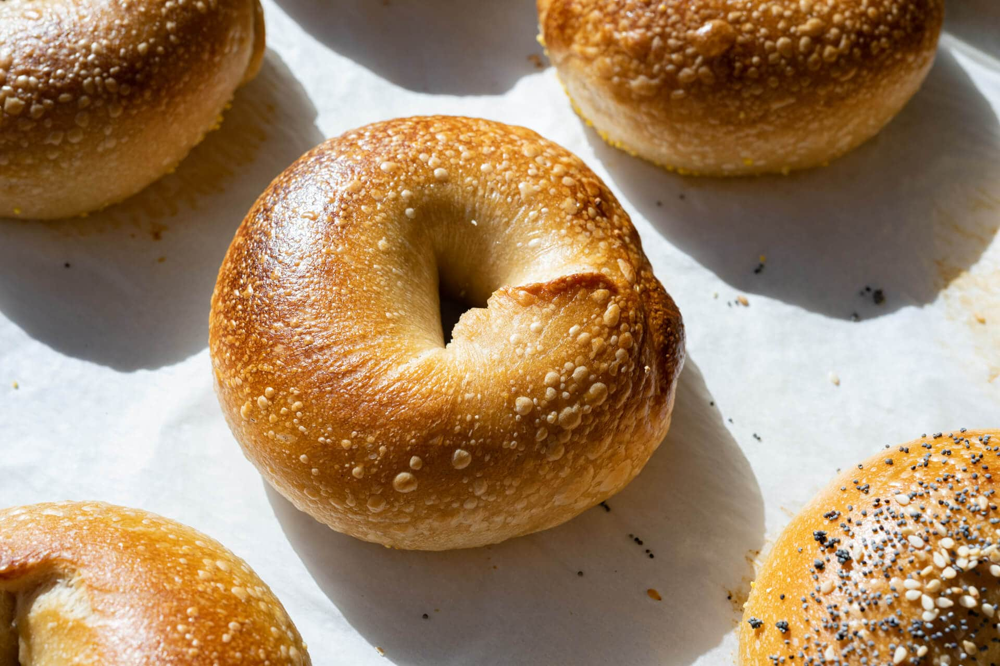

Homemade Bagels

Ingredients
- 4 cups bread flour
- 2 teaspoons instant yeast
- 1 tablespoon granulated sugar
- 1 1/2 teaspoons salt
- 1 1/4 cups warm water
- 1 tablespoon barley malt syrup (optional)
- 1 egg, beaten (for egg wash)
- Sesame seeds, poppy seeds, or other toppings (optional)
Instructions
- In a large mixing bowl, combine bread flour, instant yeast, sugar, and salt.
- Add warm water and barley malt syrup (if using) to the dry ingredients. Mix until a dough forms.
- Knead the dough on a floured surface for about 10 minutes, or until smooth and elastic.
- Divide the dough into equal portions and shape each portion into a ball.
- Poke a hole in the center of each dough ball and stretch it into a bagel shape. Make the hole slightly larger than you want the finished bagel to be, as it will shrink during boiling and baking.
- Place the shaped bagels on a lightly greased baking sheet, cover them with a clean kitchen towel, and let them rise for about 20-30 minutes.
- Preheat the oven to 425°F (220°C). Bring a large pot of water to a boil and add the barley malt syrup (if using).
- Boil the bagels, a few at a time, for about 1-2 minutes per side. Use a slotted spoon to remove them from the water and place them back on the baking sheet.
- Brush the boiled bagels with beaten egg wash and sprinkle with sesame seeds, poppy seeds, or other desired toppings.
- Bake the bagels for 20-25 minutes, or until golden brown and firm to the touch.
- Remove from the oven and let cool on a wire rack before serving.
Enjoy your Homemade Bagels!